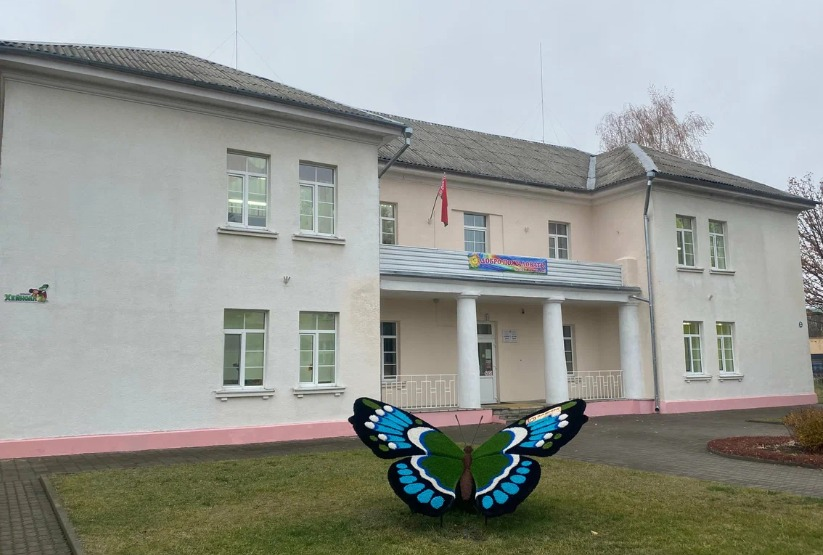

Государственное учреждение образования «Специальный детский сад № 4 г. Речицы»
Основные сведения
Тип учреждения: Учреждение специального образования
Населенный пункт: Речица
Руководитель: Вараксина Наталья Владимировна
Специфика работы: Коррекционно-педагогическая помощь детям с особенностями психофизического развития
Контактная информация
Адрес:
247500, Гомельская область, Речицкий район
г. Речица, ул. Комсомольская, д. 48
Телефон: +375 2340 9 94 24
E-mail: ds4@rechitsa-edu.gov.by
Режим работы
Понедельник – пятница: 7:30 – 18:30
Суббота, воскресенье: выходной
Логопедические пункты и коррекционные занятия: по индивидуальному расписанию
Руководство
Должность
Фамилия, имя, отчество
Заведующий детским садом
Вараксина Наталья Владимировна
Учитель-дефектолог (контактное лицо)
По вопросам зачисления обращаться к руководству
Предварительная запись на психолого-медико-педагогическую комиссию осуществляется по телефону +375 2340 9 94 24.
Об учреждении

Основными задачами государственного учреждения образования «Специальный детский сад № 4 г. Речицы» являются:
Обеспечение коррекционно-педагогической помощи детям с особенностями психофизического развития в соответствии с индивидуальными программами реабилитации.
Создание специальных условий для воспитания, обучения и социализации воспитанников с учетом их психофизических возможностей.
Формирование у детей жизненно важных компетенций, навыков самообслуживания и социальной адаптации.
Осуществление преемственности в работе с центрами коррекционно-развивающего обучения и реабилитации для успешной интеграции детей в общество.
Дополнительные ресурсы
Вышестоящая организация: Отдел образования Речицкого районного исполнительного комитета
Телефон: +375 2340 6 56 31
Факс: +375 2340 6 56 31
E-mail: priemnoy-roo@rechitsa-edu.gov.by
Время работы отдела образования:
Понедельник-пятница: 8:00 – 13:00, 14:00 – 17:30
Предпраздничные дни: 8:00 – 13:00, 14:00 – 16:30